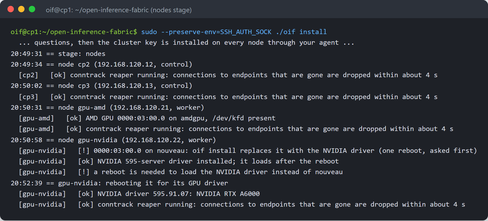
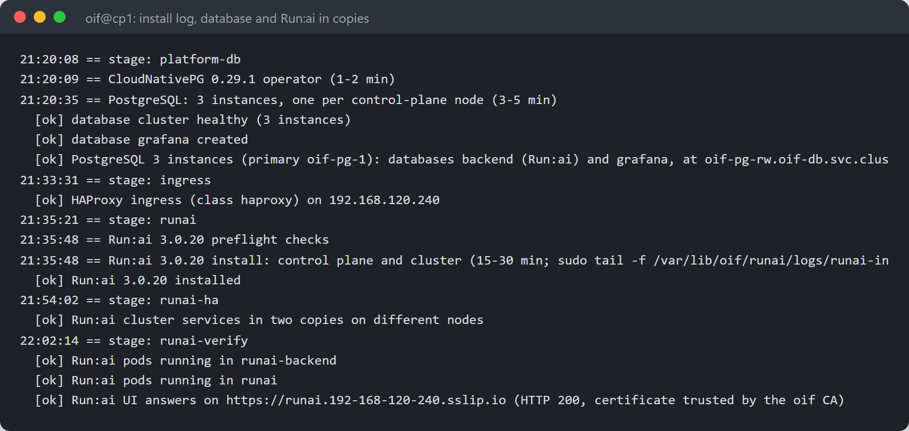
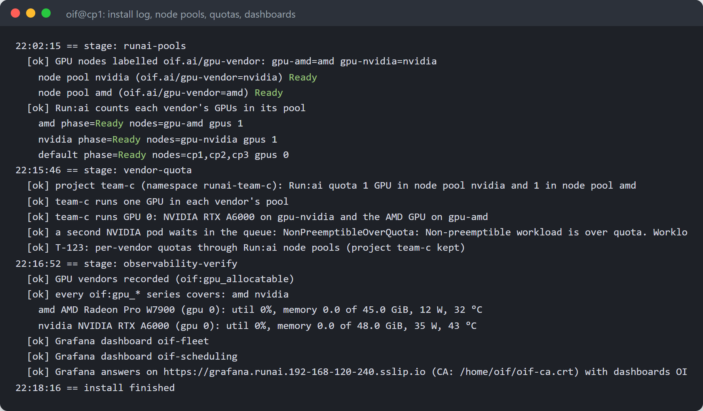
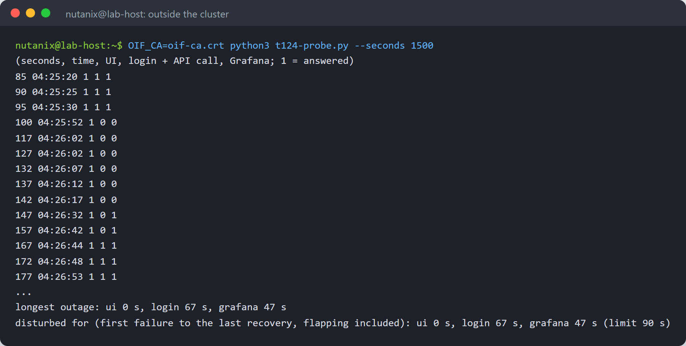
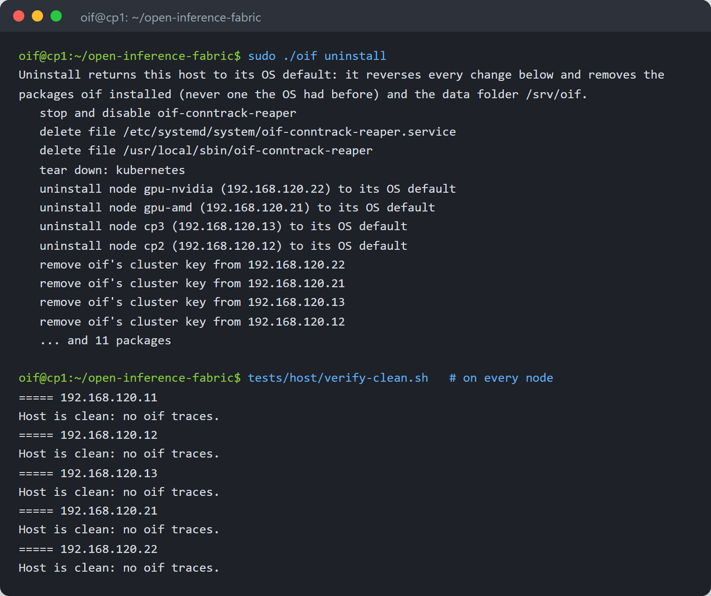

Highly Available Run:ai with NVIDIA and AMD GPUs
Install Run:ai across three control-plane nodes and an NVIDIA and an AMD GPU server with one command, oif install, every platform service in copies on different nodes. Then power off the worst control-plane node to lose and measure, from outside the cluster, what users see. About 90 minutes, with the real output of every step.
1What you get
One command on the first of five nodes installs a highly available Run:ai cluster with an NVIDIA and an AMD GPU server:
- Kubernetes on three control-plane nodes behind one API address, and the two GPU servers as workers;
- each GPU set up on its own server: the NVIDIA driver on the NVIDIA server, the AMD GPU firmware on the AMD server;
- Run:ai with one node pool per vendor (
nvidia,amd) and project quotas per pool; - every platform service in copies on different control-plane nodes, with a replicated database, so powering off any one control-plane node interrupts users for less than 90 seconds;
- oif's Run:ai patches, the ROCm templates and the Grafana dashboards for both vendors, as on one server.
The commands and the power-off demonstration are from a real run on the reference lab: five virtual machines with an AMD Radeon PRO W7900 and an NVIDIA RTX A6000. Addresses are the lab's private subnet. Planning topics (architecture, what keeps the platform up, sizing, limits) are in the companion Deployment Guide.
| Step (reference run, about 90 minutes in all) | Time |
|---|---|
| Questions and SSH key exchange | 2 minutes |
| Nodes prepared, including one reboot of the NVIDIA server for its driver | 4 minutes |
| Kubernetes on five nodes, network, storage, MetalLB | 21 minutes |
| GPU operators, database, monitoring, ingress | 21 minutes |
| Run:ai on the database, every service in two copies, node pools | 28 minutes |
| Run:ai patches, quota tests, ROCm templates, dashboards | 15 minutes |
2Before you start
- Five machines on one subnet, Ubuntu 26.04: three control-plane nodes (24 vCPU and 48 GB in the lab) and one GPU server per vendor
- One user on every node with SSH keys and sudo without a password (the lab's user
oif) - From your workstation, SSH to the first control-plane node with your agent: oif uses your access once to install its own key on the other nodes
- Free addresses on the subnet: one for the Kubernetes API and a range for MetalLB (Run:ai and Grafana)
- Outbound HTTPS from every node, as in the single-server guide
- A machine outside the cluster that reaches the MetalLB range, for the demonstration (the lab's host)
3Install
- Log in to the first control-plane node with your agent forwarded and get oif:
``bash ssh -A oif@192.168.120.11 git clone https://github.com/manmohanbrahma/open-inference-fabric.git && cd open-inference-fabric cp .env.example .env
- In
.env, list the nodes (this node first) and the addresses, besides the usual settings (Run:ai administrator, passwords):
``bash OIF_NODES="192.168.120.11:control 192.168.120.12:control 192.168.120.13:control 192.168.120.21:worker 192.168.120.22:worker" OIF_API_VIP=192.168.120.10 METALLB_RANGE=192.168.120.240-192.168.120.244 HOST_IP=192.168.120.11
With three control-plane nodes, oif installs the platform in copies on its own: nothing else to set.
- Install, keeping your agent through sudo for the key exchange:
``bash sudo --preserve-env=SSH_AUTH_SOCK ./oif install
The questions come first, then the key exchange, then the install runs as a background job (journalctl -fu oif-install to follow it).




| Stage | What it does with several nodes |
|---|---|
| nodes | copies oif to each node and prepares it there: packages, kernel, containerd, the NVIDIA driver or the AMD firmware, Kubernetes packages, the connection reaper; reboots a node when its driver needs it |
| kubernetes, k8s-join | kube-vip on the API address, kubeadm init on this node, the others join; join tokens are deleted after |
| metallb | the ingress address is announced only from the control-plane nodes |
| gpu-operator, amd-gpu-operator | installed when any node has that vendor's GPU, checked on the node that has it |
| platform-db | CloudNativePG and a database of three instances, one per control-plane node |
| runai, runai-ha | Run:ai on the external database, then every service in two copies on different nodes |
| runai-pools | GPU nodes labelled by vendor, Run:ai node pools nvidia and amd |
| vendor-quota | project quotas per pool, proved with one pod per vendor and a third that queues |
4Check it worked
On the first node, the lab acceptance scripts:
sudo tests/lab/t120-nodes.sh # cluster key, node stages on every node sudo tests/lab/t121-cluster.sh # 5 nodes Ready, the API on its shared address sudo tests/lab/t122-gpus.sh # each GPU on its driver and node, a pod per vendor on the right node sudo tests/lab/t123-runai.sh # pools per vendor, patched images on every node, placement and quota per pool

5Power off a control-plane node
The demonstration powers off the worst node to lose: the one holding both the database primary and the ingress address. Two programs measure it:
tests/lab/t124-ha.shon another control-plane node checks, while the node is off, the Kubernetes API, the database failover, Run:ai's API, new workloads in both GPU pools, quotas and the dashboards; then that every copy is complete again once the node is back.tests/lab/t124-probe.pyon a machine outside the cluster does what a user does every 5 seconds: opens the Run:ai UI, logs in to Run:ai and calls its API with the token, and searches Grafana's dashboards. It reads the credentials from the environment and never prints them.
- On the outside machine, with the oif CA certificate copied from the first node (
~/oif-ca.crt), start the probe:
``bash export RUNAI_URL=https://runai.192-168-120-240.sslip.io RUNAI_USER=... RUNAI_PASSWORD=... export GRAFANA_URL=https://grafana.runai.192-168-120-240.sslip.io GRAFANA_USER=admin GRAFANA_PASSWORD=... OIF_CA=oif-ca.crt python3 t124-probe.py --seconds 1500 | tee probe.txt
- On another control-plane node, start the test with the node to lose:
``bash sudo tests/lab/t124-ha.sh cp2
- When the test asks, power the node off (the lab:
virsh destroy hl-cp2on the host), and power it on again when it asks again (virsh start hl-cp2). If your connection to the lab may drop, start both programs detached (systemd-runon the node,setsid nohupon the outside machine): the test waits only 15 minutes for the power-off.
Results
On the reference run cp2 held both the database primary and the ingress address. The test, while cp2 was off and after it came back:

What a user outside saw (seconds since the probe started, time, then 1 when each answered; cp2 went off at 04:25:35):

| Measured from outside | Away for | Limit |
|---|---|---|
| Run:ai UI | 0 s | 90 s |
| Run:ai login and API call | 67 s | 90 s |
| Grafana | 47 s | 90 s |
Nobody acted: no taint, no restart, no command. The login gap is the database failover itself: 20 s until Kubernetes declares the node down, then the standby promotion and Keycloak and Run:ai reconnecting to the new primary.
6Troubleshooting
| Symptom | Cause and fix |
|---|---|
cluster key is not on every node in the questions | Your agent did not reach sudo. Log in with ssh -A and run sudo --preserve-env=SSH_AUTH_SOCK ./oif install. |
<node> did not come back after the reboot | The node took longer than 10 minutes or powered off: start it and run the install again. |
The probe shows login 0 long after a failover while all pods are Ready | Clients are stuck on the old database primary: check systemctl status oif-conntrack-reaper on every node. |
A database instance stays 0/1 after its node returned, with requested WAL segment ... has already been removed | The node was off longer than the log the primary keeps. Rebuild the copy: kubectl -n oif-db delete pvc oif-pg-N and kubectl -n oif-db delete pod oif-pg-N. |
A pod in a vendor pool stays Pending with NonPreemptibleOverQuota | The project's quota in that pool is used: the per-vendor quota working. |
7Uninstall
On the first node:
sudo ./oif uninstall
It uninstalls every node from its own change record (packages, kernel settings, the NVIDIA driver, Kubernetes, the connection reaper), then removes oif's SSH key from the other nodes. It asks first whether to reboot when done, which unloads the removed drivers (the NVIDIA server goes back to the open-source driver) and clears the network rules. tests/host/verify-clean.sh on each node checks that nothing is left.
